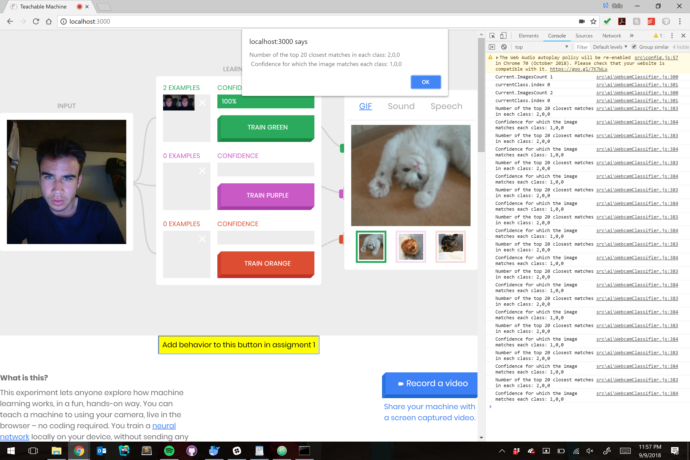
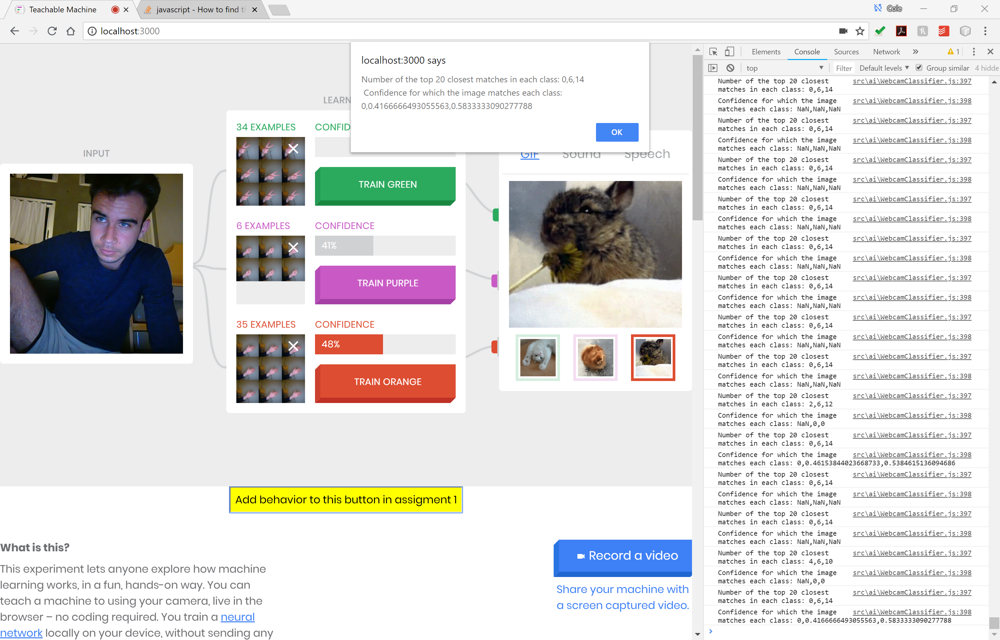
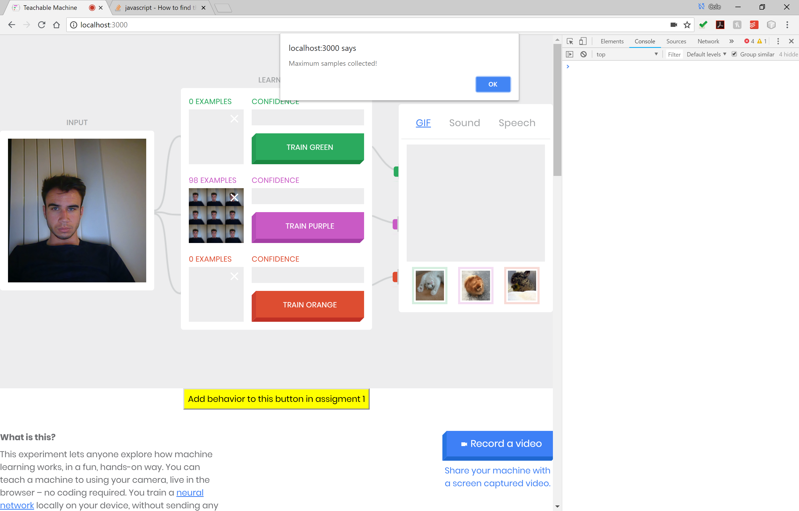

6.S198 Assignment 1
Email: choffer@mit.edu
2: Train Classes
In general, the network had little trouble distinguishing different faces or inantimate objects. Where trouble did occur was with other variables not including the face or object changing. For example, I trained with my roomate who looks extremely different from me, the network seemed to always get us confused. Eventually we realized that most of the decision making being done by the network had to do with the backgrounds, since we were passing the laptop to eachother, and thus had different backgrounds. This was a much bigger change then the details of a face that only take up around 25% of the screen. This plays a lot into the linked "Russian tank parable", where unexpected variable changes can be the majority weights in the network. There was a similar affect when we played around with faces at different distances, where eventually the amount of screen being taken up by the face was a much more heavily weighted feature than the individual features of the particular faces. For inaninmate objects, the results were not as extreme compared to the faces, as the network seemed to have an easier time distiguishing the objects, even with different backgrounds.
4: Confidence Levels
- The 2 variables were already cast as global, so I just had to replace the null assignments, and could then access the correct values on the button click function.

-
For distinct inanimate objects with the same background, I was able to get 98-100% confidence with all 20 top K being from the correct class. For the same objects, but now with different backgrounds, there were instances where results like 89% confidence, and 18 out 20 top K were results, especially when placing the objects in backgrounds that weren't trained on.
5: Scaling Confidence Levels
-
The biggest issue I noticed is the weighting (or lack of) in terms of samples. For example, if you're looking at 3 classes, where 2 have 500 samples each and the third only has 20, there is a large room for inbalance in terms of finding nearest neighbors, as the greater sample sized classes have more examples to choose from. To combat this, we can edit the confidence by weighting, so raw confidence = (# of matches in class x) / (# of samples in class x). You would then have to scale the raw confidence scores so they sum to 1 in the end (add to find sum, then divide by individual raw scores).
- In this example, I just did hand gestures, but only 6 of the closed fist (forgot to screenshot with the closed fist, so sorry haha). Thus, the fist class has a higher confidence score (around 41%) then it would have unweighted (would have been 30%). But because there were only six samples to train on, the regular open hand class was still able to be the next 14 closest neighbors, and thus rightfully had a majority of the confidence even in the weighted results.

- Add weights would be extremely important in instances where you might need to classify a more rare type of class, when other more popular options exist. For example, if you were trying to classify dog breeds, chances are your dataset will have a lot more golden retrievers then it will have of berniepoos. But when you test on a berniepoo, those trained images should be worth more then the plethora of extra golden retreiver images might be incorporated as a K nearest neighbor randomly because you ran out of berniepoos to be k neighbors. (Dogs are not the only example of classifying specalized classes, but I'm willing to bet they are one of the cutests examples)
6: Limit Samples
-

- While adding weights does help classify more specialized objects that may have less training examples, it can also over greatly skew results towards those classes with lower sample sizes. So for example, if a network is reasonably a good face identifier, a particular face with a small number of training examples might get unreasoably high confidence levels just for getting one or two nearest neighbors, with the correct class being hurt because of this.
7: Exploration
-
Adjusting K: can simply adjust the "TOPK" const to play around. But found that both increasing and decreasing K had advantages and disadvantages. By increasing K, we allowed classes with high sample sizes to be more accurate with their confidence, as the more K neighbors we added, the more "correct" sample were chosen. So even if an erronious class had a couple random samples that made it into the K neigbors, they were eventually weighed out with the higher K count. Conversly, increasing the K count hurt correct classes with smaller sample sizes, as eventually there just weren't enough samples in the samller (but correct) class, so the confidence would begin to drop. The opposite of both cases were true when lowering the K count. High sample size cases could lead to "almost random" overconfident faulty classes, while small sample sized cases saw the benefit of having their closest match be accounted for more in the confidence determining process.
-
Harder Questions: I think faces served as the biggest challenge in this exercise, especially expressions. This might because changing expressions also changes other features, such as yawning leading particular people to open their eyes more (well it does for me at least haha). This made it more difficult to ONLY try to classify expressions, as the network could look at these other differences correlated with the expression, and then make predictions based on the entire subject, rather then just say the mouth.